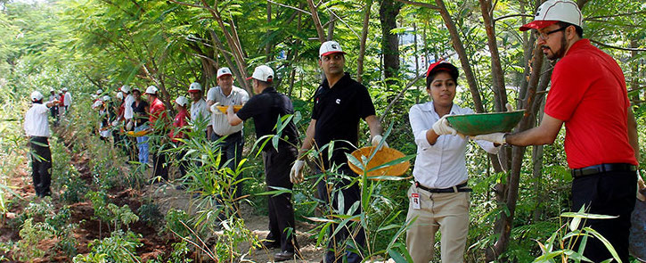

SOLUTIONS
Start planting trees :
That’s the sum of the domestic campaign so far. Soon, all the neighbors will be carbon copying each
other.
Go paperless:
Whether at home or work, many of us still have that nasty, lazy habit of not learning to utilize
computer files and folders properly. So instead, we print. And, you know what, many of us do this when
we think others are not looking. So, there you go. You know it’s wrong.
Recycle paper and cardboard :
It is because one ton (2,000 pounds) of paper put to recycle prevents the cutting of 17 trees. These 17
trees then sequester around 250 pounds of carbon dioxide from the air every single year. If only 10
percent of the entire paper used by the average American were recycled in a year, 25 million trees would
be saved, and 367 million pounds of carbon dioxide will be absorbed by these trees in one year.

ILLegal logging :
You can help reduce illegal logging, ensuring that you buy only sustainable wood products that are
certified by the Forest Stewardship Council (FSC). The FSC is currently the best global standard in
forest management, providing a system for interested parties to work towards responsible forest
management. In the kitchen, cut down on your meat intake and eat as many vegetarian meals as possible.
It’s a best practice and a healthy one on top of it too. It’s problematic and time-consuming trying to
source meat products that are entirely devoid of being harvested on land that once brimmed with trees.
Palm oil:
Palm oil is a type of edible vegetable oil that is derived from the palm fruit, grown on the African oil
palm tree. According to the World Wildlife Fund, an area the equivalent size of 300 football fields of
rainforest is cleared each hour to make way for palm oil production. About 85% of all palm oil globally
produced and exported from Indonesia and Malaysia, but most of the time, not using sustainable measures.
Unless there’s concrete proof that it’s been sustainably produced, do not buy palm oil at all.

Reduce Firewood :
Do not use firewood to heat up your fireplaces. It takes a few hours to burn the firewood but takes
years to grow a single tree. Live in such a way that your activities cause minimum impact on the
environment.
Eco-forestry:
It is a restorative method of forest management that is not based on economic productivity. In this
practice, certain trees are selectively harvested while causing minimal damage to the rest of the
forest. The objective of this method in the long-term is to systematically fell mature trees while
leaving the forest ecosystem relatively unaffected.
Ngo's :
Start a Community forestry project carried out by local residents, volunteers, and schools with the
support of the government. This technique of forestry involves tree planting, timber harvesting,
cleaning, and forest conservation. Through the active involvement in the management of forests, local
people become much more aware of all the benefits that forests provide for them on a daily basis.
Support companies that produce products by causing minimal harm to the environment. To improve your
prospects of being able to make informed decisions about these companies and the many other items listed
in this article, don’t forget to read and research extensively. Start planting trees. That’s the sum of
the domestic campaign so far. Soon, all the neighbors will be carbon copying each other.
